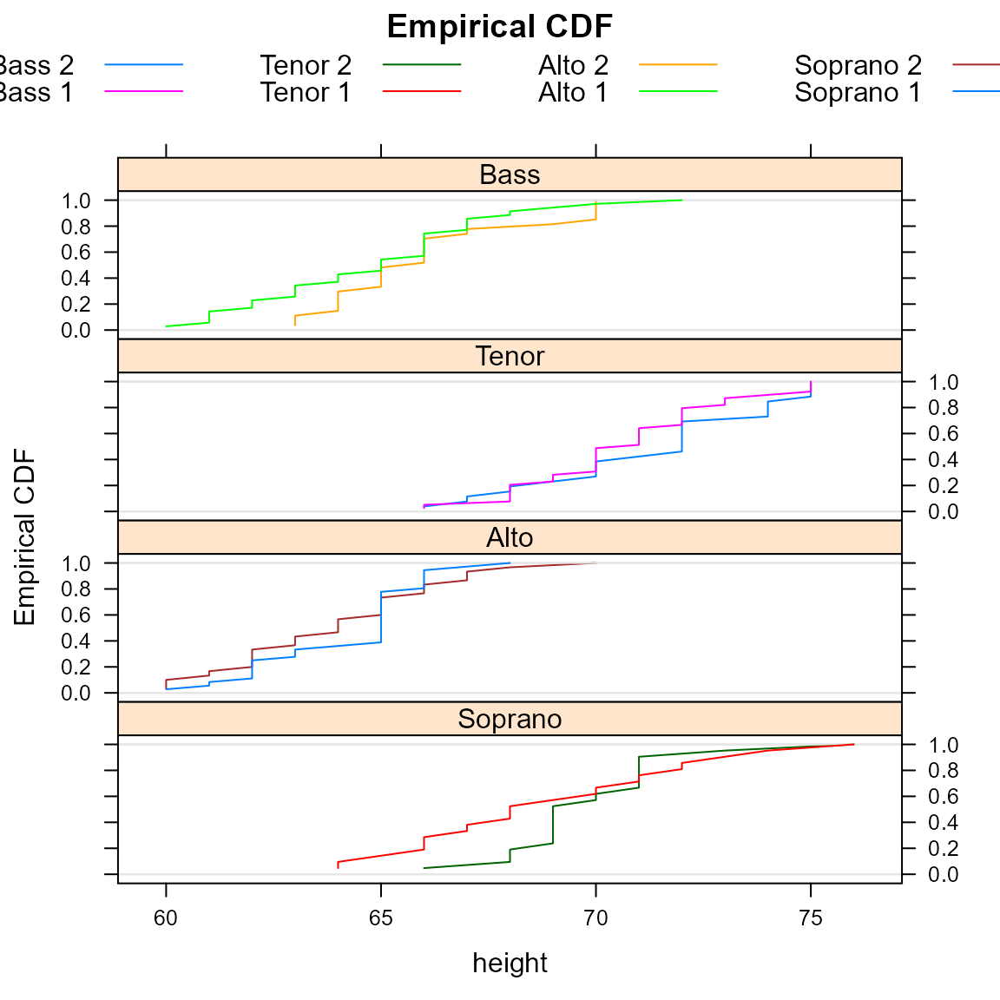
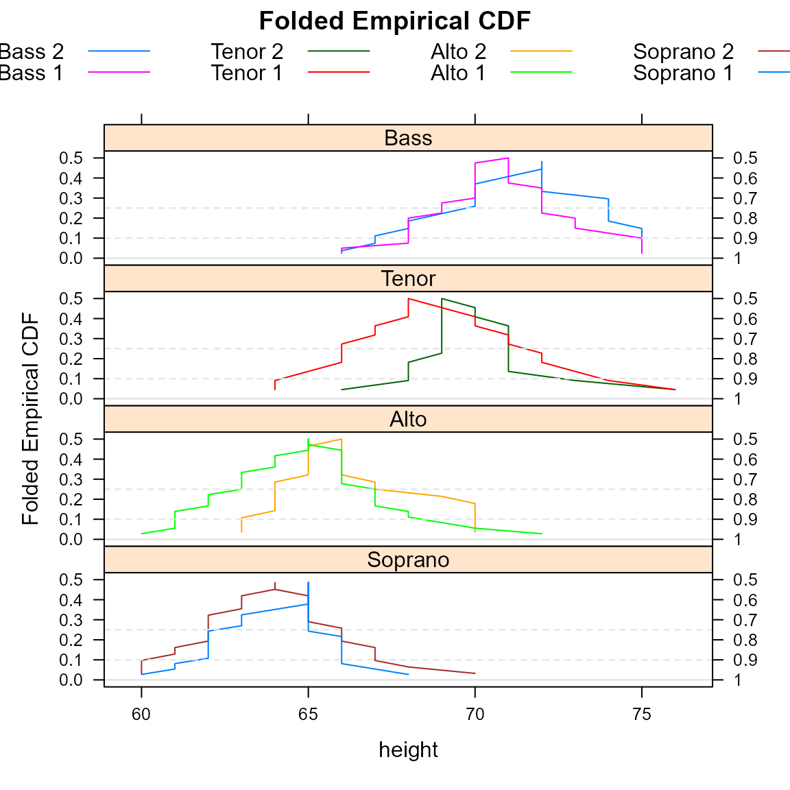
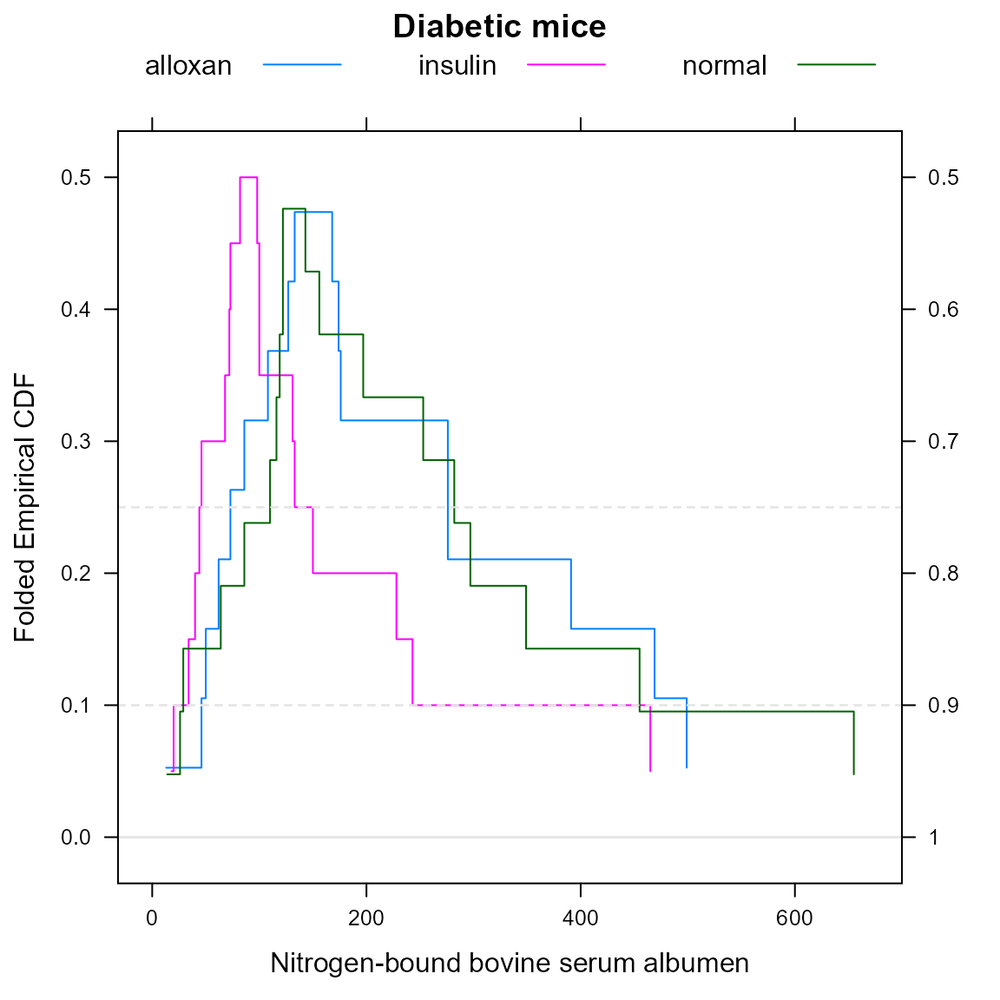

mountainplot_examples.RmdThe mountainplot package provide an extension to the lattice package that allows for the consutruction of mountain plots, which are also known as folded empirical cumulative distribution plots.
Load the package and use the singer data from the lattice package. Combine the first and second parts of each voice part into a new variable called section.
library("mountainplot")
data(singer, package = "lattice")
parts <- within(singer, {
section <- voice.part
section <- gsub(" 1", "", section)
section <- gsub(" 2", "", section)
section <- factor(section)
})
# Change levels to logical ordering
levels(parts$section) <- c("Bass","Tenor","Alto","Soprano")A mountainplot, or folded empircal cumulative distribution function, is similar to an ordinary empirical CDF, but once the cumulative probability reaches 0.50, the CDF is inverted, decreasing back down instead of continuing upward.
Here is an example of the traditional empirical CDFs.
## Loading required package: latticeExtra## Loading required package: lattice## Loading required package: RColorBrewerecdfplot(~height|section, data = parts, groups=voice.part, type='l',
layout=c(1,4),
main="Empirical CDF",
auto.key=list(columns=4), as.table=TRUE)
Here is a view of the same data shown with a mountain plot.
mountainplot(~height|section, data = parts,
groups=voice.part, type='l',
layout=c(1,4),
main="Folded Empirical CDF",
auto.key=list(columns=4), as.table=TRUE)
Monti (1995) suggests that a mountain plot is helpful with exploring data and makes it easier to:
Additionally, the area under the curve is equal to the mean absolute deviation (MAD) Xue and Titterington (2011).
Huh (1995) developed at the same time the concept of the flipped empirical distribution function. The following code creates a mountainplot of Hand’s diabetic mice data, which can be compared to Huh’s version.
dmice <- data.frame(
albumen=c(156,282,197,297,116,127,119,29,253,122,349,110,143,64,26,86,122,455,655,14,
391,46,469,86,174,133,13,499,168,62,127,276,176,146,108,276,50,73,
82,100,98,150,243,68,228,131,73,18,20,100,72,133,465,40,46,34, 44),
group=c(rep('normal',20), rep('alloxan', 18), rep('insulin', 19))
)
mountainplot(~albumen, data=dmice, group=group, auto.key=list(columns=3),
main="Diabetic mice", xlab="Nitrogen-bound bovine serum albumen")
Huh, Moon Yul. 1995. “Exploring Multidimensional Data with the Flipped Empirical Distribution Function.” Journal of Computational and Graphical Statistics 4 (4): 335–43. https://doi.org/10.2307/1390860.
Monti, K. L. 1995. “Folded Empirical Distribution Function Curves-Mountain Plots.” American Statistician 49: 342–45. https://doi.org/10.1080/00031305.1995.10476179.
Xue, Jing-Hao, and D Michael Titterington. 2011. “The P-Folded Cumulative Distribution Function and the Mean Absolute Deviation from the P-Quantile.” Statistics & Probability Letters 81 (8): 1179–82. https://doi.org/10.1016/j.spl.2011.03.014.